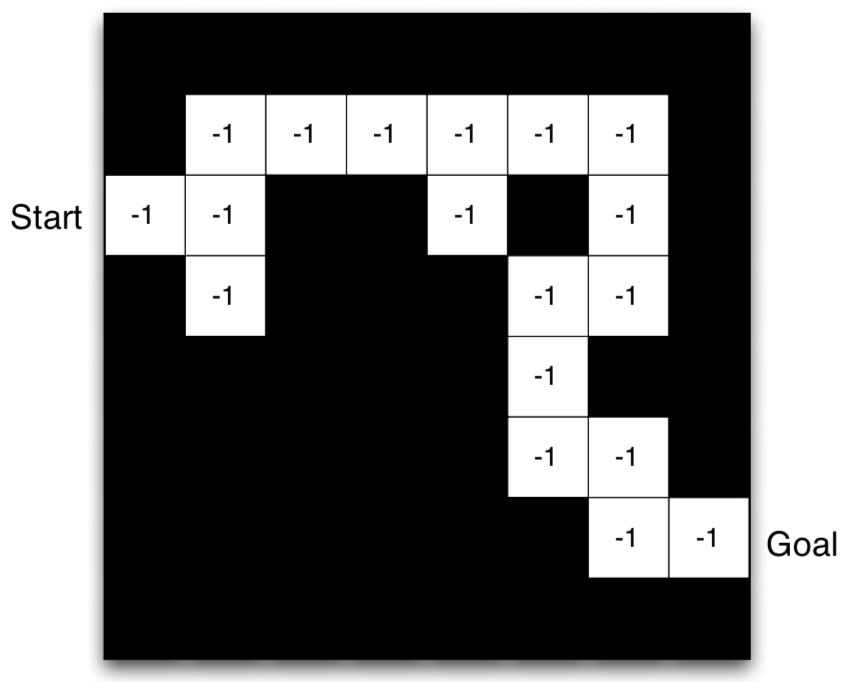
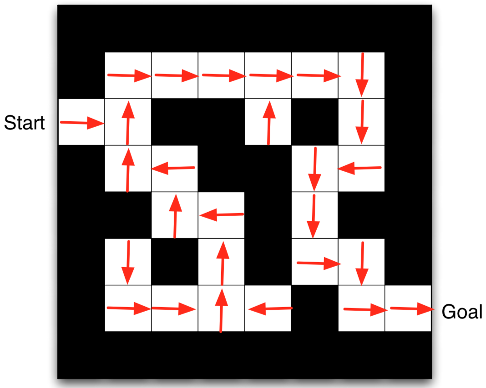
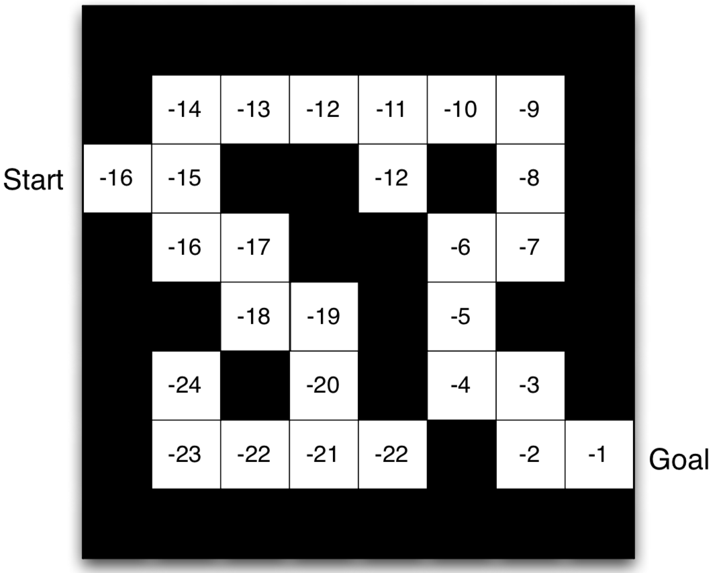

L12: Framework of Reinforcement Learning (I)
Hao Su
(slides prepared by Tongzhou Mu)
Contents are based on Reinforcement Learning: An Introduction from Prof. Richard S. Sutton and Prof. Andrew G. Barto, and COMPM050/COMPGI13 taught at UCL by Prof. David Silver.
Agenda
Examples
RL Applications
https://gym.openai.com/envs/Humanoid-v2/
https://gym.openai.com/envs/Enduro-v0/
RL Applications
https://www.youtube.com/watch?v=ITfBKjBH46E

Agent-Environment Interface
- Agent: learner and decision maker.
- Environment: the thing agent interacts with, comprising everything outside the agent.
- Action: how agent interacts with the environment.
- In engineers’ terms, they are called controller, controlled system (or plant), and control signal.
Agent-Environment Interface
- At each step \(t\) the agent
- Executes action \(A_t\)
- Receives state \(S_t\)
- Receives scalar reward \(R_t\)
- The environment
- Receives action \(A_t\)
- Emits state \(S_{t+1}\)
- Emits scalar reward \(R_{t+1}\)
RL: A Sequential Decision Making Problem
- Goal: select actions to maximize total future reward
- Actions may have long-term consequences
- Reward may be delayed
- It may be better to sacrifice immediate reward to gain more long-term reward
- Examples:
- A financial investment (may take months to mature)
- Refuelling a helicopter (might prevent a crash in several hours)
- Blocking opponent moves (might help winning chances many moves from now)
Environment Description and Learning Objective
State
- State: A representation of the entire environment, it may contain
- Description about the external environment
- Description about the agent
- Description about the desired task / goal
- ...
- As in control problems, we can use a vector $\mv{s}\in\bb{R}^n$ to represent the state.
- We can also use advanced data structures, such as images, small video clips, sets, and graphs.
Transition
- State transition functions can be deterministic or stochastic. More generally, we use a stochastic transition function.
- A state transition function is defined as
- $\mc{P}^{a}_{s,s'}=P(s'|s,a)=\text{Pr}(S_{t+1}=s'|S_t=s,A_t=a)$
- $\mc{P}$ defines the dynamics of the environment.
Markov Property
- "The future is independent of the past given the present"
- Markov state
- A state $S_t$ is Markov if and only if
- $\text{Pr}(S_{t+1}|S_t, A_t)=\text{Pr}(S_{t+1}|S_1, A_1,...,S_t,A_t)$
- The state captures all relevant information from the history
- Once the state is known, the history may be thrown away
- i.e. The state is a sufficient statistic of the future
- A state $S_t$ is Markov if and only if
Observation
- The concept of state can be extended to observation, which is the thing directly received by the agent from the environment
- Full observability: the observations are Markov states,
- the RAM of Atari games
- full state in simulator like SAPIEN
- Partial observability: there are invisible latent variables to determine the transition.
- A robot with camera vision isn’t told its absolute location
- A trading agent only observes current prices
- A poker playing agent only observes public cards
- In RL community, observation and state are sometimes used interchangeably, but "state" is more like to be Markov state, "observation" is more like to be non-Markov state.
Reward
- A reward \(R_{t+1}\) is a scalar random variable about the feedback signal
- Indicates how well agent is doing at step $t$
- Like a negative concept of "cost" in optimal control
- The agent’s job is to maximize cumulative reward
- Examples:
- Make a humanoid robot walk
- + reward for forward motion
- - reward for falling over
- Playing Go
- +/− reward for winning/losing a game
- Manage an investment portfolio
- + reward for each $ in bank
- Make a humanoid robot walk
Probabilistic Description of Environment: Markov Decision Processes
- A Markov decision process (MDP) is a Markov process with rewards and decisions.
- Definition:
- A Markov decision process is a tuple $(\mc{S}, \mc{A}, \mc{P}, \mc{R})$
- $\mc{S}$ is a set of states (discrete or continuous)
- $\mc{A}$ is a set of actions (discrete or continuous)
- $\mc{P}$ is a state transition probability function
- $\mc{P}^{a}_{s,s'}=P(s'|s,a)=\text{Pr}(S_{t+1}=s'|S_t=s,A_t=a)$
- $\mc{R}$ is a reward function
- $\mc{R}^{a}_{s}=R(s,a)=\bb{E}[R_{t+1}|S_t=s,A_t=a]$
- Sometimes, an MDP also includes an initial state distribution $\mu$
Probabilistic Description of Environment: Markov Decision Processes
- Markov decision processes formally describe an environment for reinforcement learning
- Almost all RL problems can be formalized as MDPs, e.g.
- Optimal control primarily deals with continuous MDPs
- Partially observable problems can be converted into MDPs
- Bandits are MDPs with one state (we won't discuss this in our class)
- In this course, our RL algorithms are based on the MDP assumption (i.e., fully observable states).
Return
- Infinite-horizon return (total discounted reward) from time-step $t$ (for a given policy):
- $G_t=R_{t+1}+\gamma R_{t+2}+...=\sum_{k=0}^\infty\gamma^k R_{t+k+1}$
- $\gamma\in[0,1]$: discount factor
- Note: $G_t$ is a random variable, because reward is a random variable
- Does it remind you the concept of "cost-to-go" function?
- Introducing $\gamma$ values immediate reward over delayed reward
- $\gamma$ close to $0$ $\to$ "myopic" evaluation
- $\gamma$ close to $1$ $\to$ "far-sighted" evaluation
- Most Markov reward and decision processes are discounted. Why?
- Mathematically, total reward gets bounded (if step rewards are bounded).
- Uncertainty about the future may not be fully represented
- Animal/human behaviour shows preference for immediate reward
Episode
- Agent-environment interaction usually breaks naturally into subsequences, which we call episodes, e.g.,
- plays of a game
- trips through a maze
- Termination of an episode
- Each episode ends in a special state called the terminal state, followed by a reset to a standard starting state or to a sample from a standard distribution of starting states.
- Even if you think of episodes as ending in different ways, such as winning and losing a game, the next episode begins independently of how the previous one ended.
- The time of termination, $T$, is a random variable that normally varies from episode to episode.
- Tasks with episodes of this kind are called episodic tasks.
- In episodic tasks, returns will be truncated to finite-horizon.
Learning Objective of RL
- Formally, the objective of an RL agent is to maximize its expected return
- Given an MDP, find a policy $\pi$ to maximize the expected return induced by $\pi$
- We use $\tau$ to denote a trajectory $s_0,a_0,r_1,s_1,a_1,r_2,...$ generated by $\pi$
- The conditional probability of $\tau$ given $\pi$ is \[ \begin{aligned} \text{Pr}(\tau|\pi) & = \text{Pr}(s_0,a_0,r_1,s_1,a_1,r_2,...|\pi)\\ & = \text{Pr}(S_0=s_0)\text{Pr}(a_0,r_1,s_1,a_1,r_2,...|\pi,s_0)\\ & = \text{Pr}(S_0=s_0)\text{Pr}(a_0,r_1,s_1|\pi)\text{Pr}(a_1,r_2,...|\pi,s_1) \qquad\mbox{// by Markovian property}\\ & = \text{Pr}(S_0=s_0)\pi(a_0|s_0)P(s_1|s_0,a_0)\text{Pr}(r_1|s_0,a_0)\text{Pr}(a_1,r_2,...|\pi,s_1)\\ & = ~...\\ & = \text{Pr}(S_0=s_0)\prod_t\pi(a_t|s_t)P(s_{t+1}|s_t,a_t)\text{Pr}(r_{t+1}|s_t,a_t)\\ \end{aligned} \]
- We use $\tau$ to denote a trajectory $s_0,a_0,r_1,s_1,a_1,r_2,...$ generated by $\pi$
Learning Objective of RL
- Formally, the objective of an RL agent is to maximize its expected return
- Given an MDP, find a policy $\pi$ to maximize the expected return induced by $\pi$
- We use $\tau$ to denote a trajectory $s_0,a_0,r_1,s_1,a_1,r_2,...$ generated by $\pi$
- Optimization problem: $\max_\pi J(\pi)$ \[ \begin{aligned} J(\pi) & = \bb{E}_{\tau\sim\pi}[R_1+\gamma R_2+...] \\ & = \sum_{\tau}\text{Pr}(\tau|\pi)(r_1+\gamma r_2+...) \\ & = \sum_{\tau}\left(\text{Pr}(S_0=s_0)\prod_t\Big(\pi(a_t|s_t)P(s_{t+1}|s_t,a_t)\text{Pr}(r_{t+1}|s_t,a_t)\Big)(r_1+\gamma r_2+...) \right)\\ \end{aligned} \]
Data Collection in Supervised Learning and Reinforcement Learning
- In supervised learning,
- A dataset $\mc{D}=\{(x_i,y_i)\}$ is usually given and fixed
- where $x_i$ is input of a data sample, $y_i$ is the corresponding label
- In reinforcement learning,
- The "dataset" $\mc{D}=\{(s_t, a_t, r_{t+1}, s_{t+1})\}$ is sampled by the agent itself by its policy $\pi$
- And the data distribution will shift according to the change of $\pi$
- This difference introduces a core problem in RL: exploration, which we will elaborate later in this course.
Relationship between Optimal Control and Reinforcement Learning
- Optimal Control
- Controller
- Controlled System
- Control Signal
- State
- Cost
- Cost-to-go function
- Reinforcement Learning
- Agent
- Environment
- Action
- State / Observation
- Reward
- Return
- Differences
- Environment dynamics is usually known in optimal control, but likely to be unknown in RL.
- RL extends the ideas from optimal control to non-traditional control problems.
- RL is more data-driven while optimal control is model-driven.
Inside an RL Agent
Major Components of an RL Agent
- An RL agent may include one or more of these components:
- Model: agent's representation of the environment
- Policy: agent's behaviour function
- Value function: how good is each state and/or action
Model
- In RL community, the term "model" has a specific meaning
- A model predicts what the environment will do next
- $\mc{P}$ predicts the next state
- $\mc{P}^{a}_{s,s'}=\text{Pr}(S_{t+1}=s'|S_t=s,A_t=a)$
- Sometimes this is also called dynamics model
- $\mc{R}$ predicts the next (immediate) reward
- $\mc{R}_{s}^a=\bb{E}[R_{t+1}|S_t=s,A_t=a]$
- Sometimes this is also called reward model
- If the agent maintains a model of the environment to learn policies and value, we call its learning method is model-based.
- It is also possible for the agents to learn about policies and environments without an environment model. Then, it is called model-free.
Maze Example
- States: Agent's location
- Actions: N, E, S, W, stay
- Reward: -1 per time-step
- Termination: Reach goal

Maze Example: Model
- Agent may have an internal model of the environment
- Dynamics: how actions change the state
- Rewards: how much reward from each state
- In the right figure:
- Grid layout represents transition model $\mc{P}_{s,s'}^a$
- Numbers represent immediate reward $\mc{R}_s^a$ from each state $s$ (same for all $a$)

Policy
- A policy is the agent's behaviour
- It is a map from state to action, e.g.,
- Deterministic policy: $a=\pi(s)$
- Stochastic policy: $\pi(a|s)=\text{Pr}(A_t=a|S_t=s)$
Maze Example: Policy
- Arrows represent policy $\pi(s)$ for each state s
- This is the optimal policy for this Maze MDP

Value Function
- Value function is a prediction of future reward
- Evaluates the goodness/badness of states
- State-value function
- The state-value function $V_\pi(s)$ of an MDP is the expected return starting from state $s$, following the policy $\pi$
- $V_\pi(s)=\bb{E}_\pi[G_t|S_t=s]$ (assuming infinite horizon here)
- Action-value function
- The action-value function $Q_\pi(s,a)$ is the expected return starting from state $s$, taking action $a$, following policy $\pi$
- $Q_\pi(s,a)=\bb{E}_\pi[G_t|S_t=s, A_t=a]$ (assuming infinite horizon here)
- Notation explanation:
- In this lecture, when we write $\bb{E}_\pi$, it means we take expectation over all samples/trajectories generated by running the policy $\pi$ in the environment
- So it counts for all the randomness from policy, initial state, state transition, and reward.
Bellman Expectation Equation
- Value functions satisfy recursive relationships: \[ V_{\pi}(s)= \bb{E}_{\pi}[R_{t+1}+\gamma V_{\pi}(S_{t+1})|S_t=s] \tag{Bellman expectation equation} \] \( \aligned{ \mbox{Proof:}\qquad\qquad V_\pi(s)&= \bb{E}_\pi[G_t|S_t=s] = \bb{E}_\pi[R_{t+1}+\gamma R_{t+2}+\gamma^2 R_{t+3} +...|S_t=s] \\ & = \bb{E}_\pi[R_{t+1}+\gamma (R_{t+2}+\gamma R_{t+3} +...)|S_t=s] \\ &= \bb{E}_\pi[R_{t+1}+\gamma G_{t+1}|S_t=s] } \)
- The value function can be decomposed into two parts:
- immediate reward $R_{t+1}$
- discounted value of successor state $\gamma V_\pi(S_{t+1})$
- The action-value function can similarly be decomposed: \[ Q_{\pi}(s,a)=\bb{E}_{\pi}[R_{t+1}+\gamma Q_{\pi}(S_{t+1}, A_{t+1})|S_t=s, A_t=a] \]
Maze Example: Value Function
- Numbers represent value $V_\pi(s)$ of each state $s$
- This is the value function corresponds to the optimal policy we showed previously


End